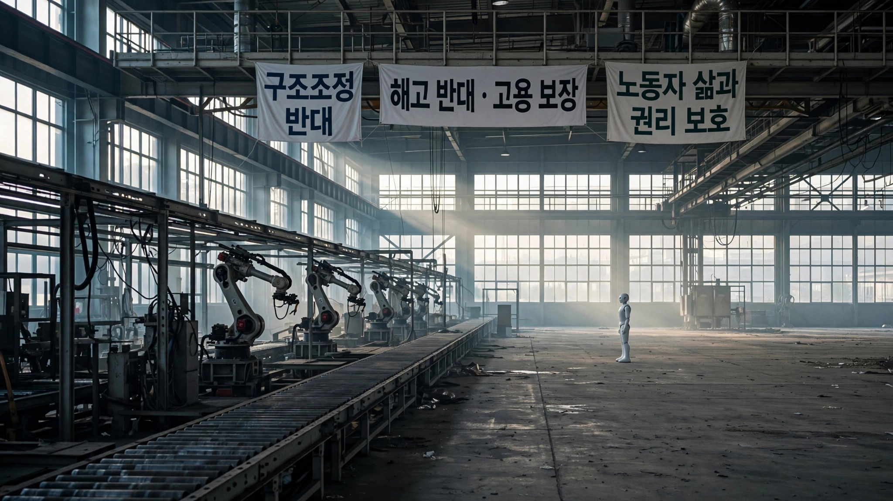

💼 Labor & AI
Hyundai's 39,668 Workers Voted to Strike Over a Robot That Hasn't Clocked In Yet. Here's the Cost Math Behind Their Fear.
The auto industry's first factory stoppage over humanoid robots started in Ulsan, South Korea, where a three-day rolling strike confronts a $3.25 billion fleet that doesn't exist yet. We ran the unit economics. At scale, one Atlas replaces three workers and pays for itself in eight months.

Ninety-two percent. That's the share of Hyundai Motor's 39,668 unionized workers who voted to authorize a strike after 11 rounds of failed wage negotiations this summer, a margin that crushed every prior authorization vote in the company's 39-year bargaining history. The three-day rolling action that followed cost Hyundai thousands of vehicles in lost output at its Ulsan complex, the world's largest integrated auto manufacturing facility, where 1.6 million vehicles roll off the line each year and a single day of stoppage burns through 80 billion won.
Headlines called it a wage dispute. It is. Bigger bonuses, richer profit-sharing, retirement age pushed from 60 to 65. Standard fare. But woven through every demand is a clause that has never appeared in an auto industry collective bargaining agreement anywhere on Earth: formal negotiations before any humanoid robot sets foot on a production line.
Atlas is the robot in question, built by Boston Dynamics, which Hyundai acquired an 80% stake in back in 2021. Unveiled at CES 2026, Atlas stands 6-foot-2, lifts 110 pounds, rotates every joint 360 degrees, and swaps its own batteries in under three minutes. It is the first humanoid robot whose manufacturer has published its reinforcement learning training methodology in full technical detail. It is also the first humanoid that its parent company has committed to buying 25,000 of.
That number landed at a JPMorgan Chase investor session in Boston in May, where executives from six Hyundai affiliates disclosed that the company would absorb 83% of its 30,000-unit annual production target for internal factory deployment, a figure so large that it swallows Boston Dynamics' entire projected output before a single external customer receives a unit. First stop: the non-unionized Metaplant America in Savannah, Georgia, in 2028. Kia's Georgia facility follows in 2029. Korean factories? No timeline given.
The union noticed, and they did the math.
The Ulsan Cost Parity Clock
A South Korean government research institute estimates Atlas at $130,000 per unit at mid-scale production. Samsung Securities projects steeper declines: $50,000 at 10,000 units, $35,000 at 30,000. Hyundai Mobis, the automotive parts affiliate that already manufactures Atlas's actuators, is building a dedicated U.S. actuator factory with annual capacity of 350,000 units by 2028, targeting a 70% reduction in actuator costs, which represent roughly 60% of each robot's material expense.
We ran the displacement math against the company's own labor data, and here is what falls out.
The average annual salary of a Hyundai Motor unionized worker is 124 million Korean won, approximately $90,000 at current exchange rates, spread across roughly 41,000 unionized production workers. Total annual labor cost for that group: $3.69 billion, before benefits, retirement contributions, and the performance-based bonuses that regularly push total compensation above six figures.
At the government's $130,000-per-unit estimate, 25,000 Atlas robots cost $3.25 billion, which is 88% of one year's unionized wage bill.
In January, the union itself ran these numbers. In a public statement, the Korean Metal Workers' Union calculated that at an estimated cost of 200 million won per unit (roughly $145,000), a single Atlas operating around the clock would replace the work of three human workers while costing less over two years than the wages of one. By their arithmetic: one worker earning 124 million won per year costs 248 million won over two years. One robot at 200 million won, working three shifts instead of one, delivers three times the coverage. Cost per unit of labor: the robot wins by a factor of 3.7.
Samsung Securities' cost curve makes the math more extreme, almost absurdly so. At their projected $35,000 per unit at 30,000-unit scale, the entire 25,000-robot fleet costs $875 million, roughly what Hyundai lost in its 2017 strike alone, and at that price point, each robot replaces three FTEs and pays for itself in under four months of continuous operation.
History Rhymes at 80 Billion Won Per Day
Hyundai's last major strike, in 2017, lasted 24 days and disrupted production of approximately 89,000 vehicles. Total financial losses reached 1.89 trillion won, roughly $1.37 billion, hemorrhaging 80 billion won per day.
The 2026 action is smaller in scale, with workers leaving two hours early across three rolling days rather than walking out entirely. But the financial calculus remains instructive, because the total cost of the 25,000-robot fleet, at the government's $130,000-per-unit estimate, equals 2.37 major Hyundai strikes. Flip that: the company could fund the entire fleet with the losses from two-and-a-half full work stoppages.
Hyundai has averaged a major strike roughly every five to seven years since its union was founded in 1987. Annualized, that implies an expected strike cost of approximately $228 million per year, and a $3.25 billion robot fleet, viewed purely as strike insurance, pays for itself in 14 years, a timeframe well within the useful life of an industrial automation platform that can be software-updated indefinitely. At the Samsung Securities' $35,000-per-unit projection, that payback window shrinks to under four years.
No executive would frame it this way on the record. Hyundai's official statement to Carscoops was careful: "Potential deployment of robots in Korean production facilities is not part of the current labor-management discussions." They emphasized Georgia. They said the strike was about compensation, not robots.
Read that again. They didn't say robots weren't coming to Korea. They said they aren't being discussed yet.
Meanwhile, in Grünheide
Hyundai is not alone in this calculus. At Tesla's Giga Berlin factory near Grünheide, Germany, a leaked internal email obtained by Handelsblatt instructed workers to wear body cameras and "Ghostbusters-like" backpacks when they return from summer holidays in August, equipment that records human motion patterns so Optimus can learn to replicate them.
Its email's phrasing was telling: it described Optimus as essential to "sustainable prosperity" and told workers the robot needed "the most realistic data available. That means real human patterns of motion." The program already operates at Tesla's Fremont and Austin facilities, where data collectors wear multi-camera helmets connected to backpacks while sorting vehicle parts and managing conveyor belts, each recorded gesture becoming raw material for imitation learning systems that will eventually perform the same tasks autonomously. Berlin marks the program's first expansion outside the United States.
Tesla has converted its Fremont Model S and Model X production line into an Optimus manufacturing facility. May 2026 saw the last Model S roll off the line. CEO Elon Musk told investors that low-volume production would begin in late July or early August, cautioning that output would be "extremely slow" because the robot has roughly 10,000 unique components and "it's not like building a car."
Bank of America's Alexander Perry projects Tesla shipping 1.2 million Optimus units by 2030. Ten million by 2035. Musk has suggested a target retail price of $20,000 to $30,000 at volume, though that figure requires production scales no humanoid manufacturer has approached. It also requires something Hyundai's workers understand viscerally: a market big enough to absorb millions of labor-replacing machines.
The Competitive Landscape Nobody's Mapped
The auto industry's humanoid robot race now has six verified deployments or binding commitments, up from zero at the start of 2025:
| Company | Robot | Factory | Status (July 2026) |
|---|---|---|---|
| Hyundai | Atlas (Boston Dynamics) | Metaplant America, Georgia | 25,000 units committed, 2028 deploy |
| Tesla | Optimus | Fremont, California | Production line converted, late Jul/Aug start |
| BMW | Figure 02 (Figure AI) | Spartanburg, South Carolina | 11-month pilot complete, 30,000 X3s built |
| Mercedes-Benz | Apollo (Apptronik) | Berlin & Hungary | Pilot phase |
| Xiaomi | In-house | EV plants, China | Trial runs |
| GXO Logistics | Digit (Agility Robotics) | Warehouses, U.S. | 100,000+ totes moved |
Among these, only Hyundai has disclosed a specific fleet size for internal use. Only Hyundai faces organized labor opposition. Figure AI's 11-month BMW Spartanburg pilot produced vehicles alongside human workers without incident or union pushback, but Spartanburg, like Hyundai's Georgia Metaplant, is a non-unionized facility in the American South. A clear pattern is emerging: companies test humanoid robots where organized labor cannot object, then bring the data home.
The Natural Attrition Illusion
Hyundai's defenders, and some labor economists, point to natural attrition as a cushion against displacement. Roughly 2,000 Hyundai production workers retire each year. The union has been demanding that the company hire 1,100 replacement workers annually, suggesting that even before robots, not all departures are backfilled. If robots absorb retiree workloads instead of new hires, displacement happens through omission rather than termination.
But the math reveals why attrition cannot absorb the deployment pace Hyundai has committed to. At 2,000 retirements per year, reaching 25,000 robots through attrition-based replacement takes 12.5 years. Hyundai's production target is 30,000 robots per year by 2028. Deployment pace outstrips natural attrition by a factor of 12.5 to 1.
Workers see this gap, and it explains the 92%.
What comes into focus is the union's demand for a fixed monthly salary instead of hourly pay. If Atlas takes over material handling, the workers whose hours are cut see proportional wage reductions under the current system. A fixed salary guarantees income regardless of how many hours robots absorb. Management sees the mirror image: fixed salaries turn labor into a constant cost regardless of output, removing the adjustment lever they rely on in downturns and transitions, the very flexibility that makes wage labor cheaper than capital expenditure in a recession. Neither side is wrong about what the other wants, which is what makes this particular negotiation so difficult to resolve.
What We Don't Know
This analysis has blind spots worth naming. Samsung Securities' cost projections are analyst estimates, not confirmed pricing from Boston Dynamics, which has published no MSRP. The 3:1 worker replacement ratio assumes continuous 24/7 robot operation, which requires battery-swap infrastructure that does not exist at scale in any factory today. Atlas has completed zero confirmed autonomous factory shifts, and the published demonstrations show heavy lifting and material transport, not precision assembly, not paint application, not quality inspection, tasks which together account for the majority of auto factory labor hours.
Hyundai's Q1 2026 operating profit fell 30.8% year-over-year, and net profit dropped 23.6%, driven by tariff headwinds and slowing EV demand. Companies under margin pressure have strong incentive to announce ambitious automation plans to Wall Street even when deployment timelines remain soft. The 25,000-unit commitment was disclosed at a JPMorgan investor session, not in an SEC filing and not in an operational plan.
And Hyundai itself says robots are not part of the current Korean labor negotiations. That threat is real but not yet present. In practical terms, the union is fighting a war that hasn't started.
The Strongest Case Against Panic
The strongest counterargument is capability, not cost. Humanoid robots in 2026 cannot do most of what auto workers do. Atlas can pick up a 50-kilogram crate and place it on a high shelf with zero-shot generalization from simulated training. That is impressive, genuinely so, but an auto assembly line requires threading wiring harnesses through tight compartments, applying sealant at precise torques, detecting paint defects by eye, and making dozens of judgment calls per vehicle that current reinforcement learning pipelines cannot replicate. Boston Dynamics CEO Robert Playter told 60 Minutes that "the really repetitive, really back-breaking labor is going to end up being done by robots." He did not claim robots would build entire cars.
Historically, GM's robotic welding experiment in the 1980s is the cautionary analog. Between 1980 and 1990, GM poured $45 billion into factory automation, including the infamous Poletown plant in Detroit, which was designed to run with minimal human labor. The result was catastrophic: automated systems broke down constantly, robots sprayed paint on each other instead of cars, misaligned panels piled up on the line, and per-unit costs rose rather than fell. It took two full decades for industrial robotics to reach the reliability that justified the initial investment.
Atlas could follow the same arc, because a $130,000 robot that overheats its actuators after six hours, drops a transmission housing, or cannot adapt to a retooled assembly line is not cheaper than a $90,000 worker who handles all of those contingencies without software updates. The cost-parity math assumes competent execution, and the history of factory automation is littered with expensive incompetence.
What You Can Do
If you are a factory worker in an industry where humanoid robots are being piloted or announced, the union's Ulsan playbook is instructive. They did not wait for robots to arrive. They embedded pre-deployment negotiation rights into their current wage demands, creating a contractual gate that management must pass through before any robot touches a production line. Whether your shop is unionized or not, the principle applies: the time to negotiate transition terms is before the capex is approved, not after the robots arrive.
If you are an investor evaluating automakers' humanoid ambitions, apply the GM Poletown test. Ask whether the company has published real deployment data, not demos, press releases, or investor-session commitments, but measured throughput from robots working alongside humans on actual production lines. As of July 2026, only Figure AI's BMW Spartanburg pilot clears that bar.
If you are a policymaker, note the regulatory vacuum. The U.S. Occupational Safety and Health Administration has no regulations specific to humanoid robots operating alongside human workers. ISO 25785-1, the first safety standard for dynamically stable walking robots, is still in draft, with publication expected in 2026 or 2027 at the earliest. Three of the six auto-industry humanoid deployments listed above are on U.S. soil, operating in a regulatory space that has not caught up to the hardware.
The Bottom Line
The workers at Ulsan are not striking against a machine. They are striking against a spreadsheet. The cost-parity math between a $130,000 Atlas and a $90,000 worker is close enough that the direction of the curve is unmistakable, because robots get cheaper with scale and workers do not: Samsung Securities projects the unit cost dropping to $35,000 at 30,000 units, and at that price, each robot pays for itself in under four months of three-shift operation.
Hyundai's decision to deploy first in non-unionized Georgia tells you the strategy. Build the proof of concept where nobody can say no, and when the data from Savannah shows Atlas handling logistics at a fraction of human cost, the question won't be whether robots come to Ulsan but on whose terms they arrive.
The 92% strike vote is the union's answer. Terms first. Robots second. They have read the cost curve, and they are demanding a seat at the table before it reaches its inflection point. Automation's history suggests they are roughly 18 to 36 months early. Labor's history says that early is the only time it works.